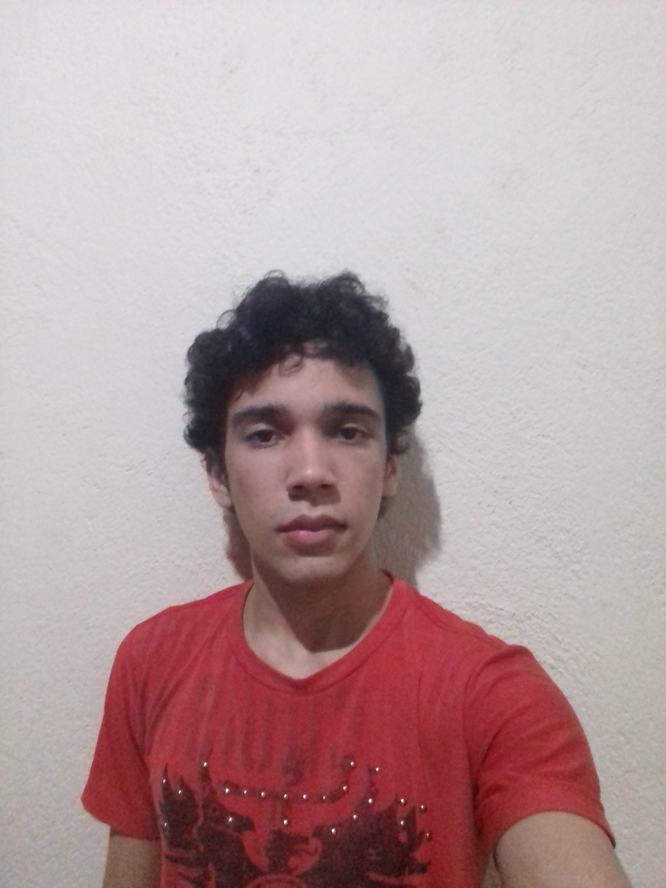

Olá, meu nome é Ulisses Albuquerque Pereira e esse site é meu trabalho de Linguagens de Marcação. A ideia era que fosse um trabalho em equipe, com todo mundo se ajudando e aprendendo uns com os outros, na epítome da humanidade. Mas eu fui deixando para depois, adiando até sobrar menos de uma semana. Como não queria prejudicar ninguém que fosse esperar minha parte, e como acho errado pedir para colocar o nome em um trabalho que não fiz, arrisquei fazer sozinho.
Quanto a mim, adoro desenhar desde pequeno, por isso escolhi esse tema para o site, mas não pretendo seguir na área artística (principalmente vendo os avanços em inteligência artificial e toda a competitividade, que me deixaria passando fome). Em vez disso, cursei informática no IFPB Campus Cajazeiras e pretendo seguir na área de tecnologia. Atualmente estou no curso de Análise e Desenvolvimento de Sistemas.Talvez nas páginas fique aparente também meu gosto por física e matemática. Peço desculpas se achar chato colocar isso no meio de tutoriais de desenho, mas é uma forma de se expressar.
